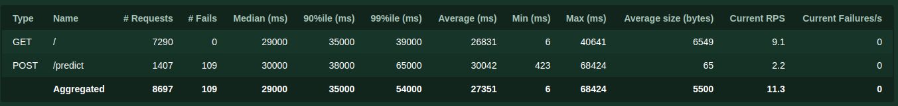
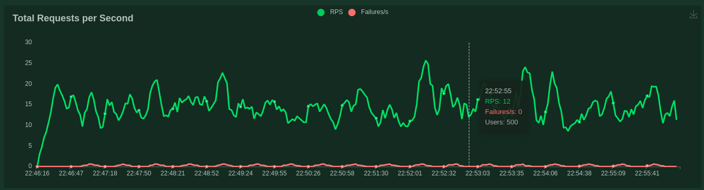
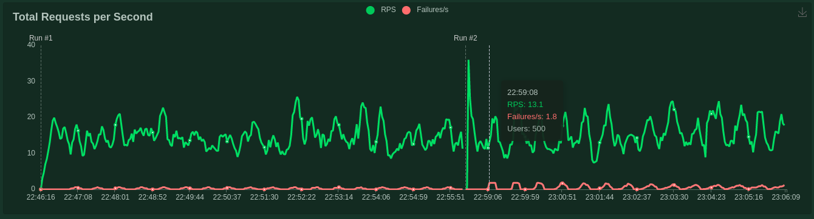
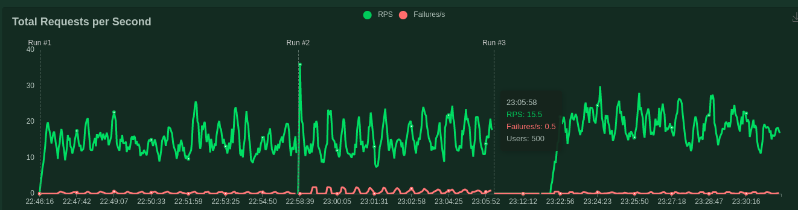
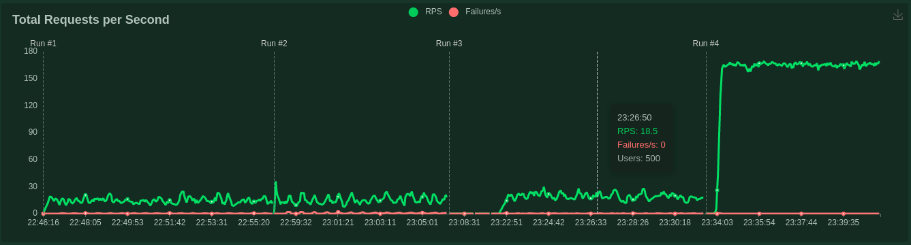

Stress Test Report
Initial Report
The initial configuration values:
- Number of users: 500
- Spawn rate: 5
- wait_time = between(1, 5)
- Test duration: 10 minutes
The total requests was 8697, the total number of failures was 109 (2%)
Requests per second ranged from 10 to 20 (RPS)
 Increase workers
Gunicorn workers count increased to 20. No significant change seen
Scale model
A scaling of the model service to 2 was performed. The requests per second increased just a bit (RPS)
Optimization
What has been done was to create a text file with the information received by the model. So if the prediction of the same image is requested later, we read the txt file without having to call the model again.
Requests per second incresed to aprox 160. There were no failures
These results are predictable since now it is not necessary to call the model, which is where the bottleneck was generated.
We know that it is not an optimal optimization for all cases, since it is unlikely that the same image will be repeated several times, but it can work in some cases.